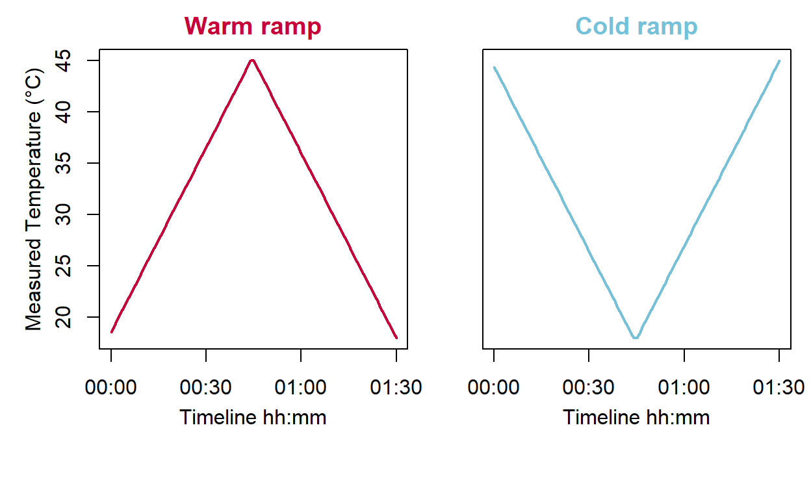
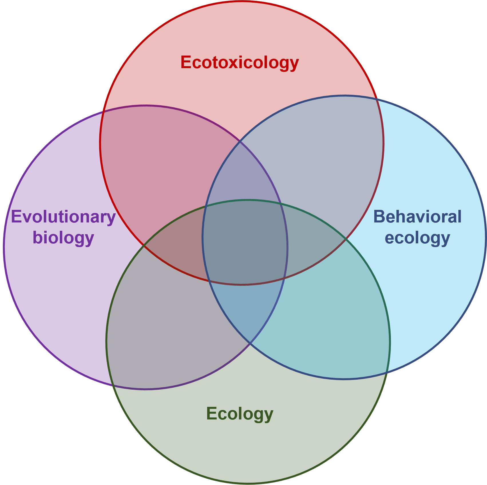

Nationalities


Present/last institutional address
Aquatic ecosystems and global change Unit (EABX, INRAE), Cestas, France.
KEYWORDS
|
Evolutionary-ecotoxicology Eco-physiology Ecology |
Multiple stressors Behavior Intraspecific variability |
EDUCATION
2019 | Paul Sabatier University—UPS | Ph.D in environmental sciences/functional ecology
2016 | Bourgogne-Franche-Comté University—UBFC | M.Sc. in environmental sciences/ecotoxicology
2014 | Bourgogne-Franche-Comté University—UBFC | B.Sc. in biology & ecology
RESEARCH EXPERIENCE
February 2024 - December 2024 | Postdoctoral researcher | National Research Institute for Agriculture, Food and Environment—INRAE; Aquatic ecosystems and global change Unit—EABX, Cestas, FR
Title: «Modeling the effects of anthropogenic pressures on migratory fishes».
Supervisor(s): Dr. Bertrand VILLENEUVE.
Read the story behind (click to unroll)
|
Still deeply interested by improving our knowledge about multiple stressors’ effects on fish health to improve conservation practices, I will join the Aquatic ecosystems and global change research unit (EABX) in February 2024. |
|

Mars 2021 - October 2022 | Postdoctoral researcher | National Research Institute for Agriculture, Food and Environment—INRAE, Sophia-Antipolis, FR
Title: «Study of intraspecific variability and thermal adaptation traits in parasitic micro-wasps using computer-vision approaches».
Supervisor(s): Dr. Vincent CALCAGNO.
Read the story behind (click to unroll)
|
Following my previous postdoctoral experience performing lab (DNA extractions – PCR) and bioinformatics analyses, my growing interest in the intraspecific variability of responses to global changes guided me to join Institut Sophia Agrobiotech (ISA).

Figure 1: Temperature ramps over which micro-wasps movements were recorded and analyzed.
The experiments were video-recorded, and my task was to use video-tracking solutions to quantify insect movements and their changes in response to temperature ramps. |

For more insight about what I did within the project check the video below
January 2020 - December 2021 and March 2023 - January 2024| Postdoctoral researcher | National Polytechnic Institute—INP, Toulouse, FR
Title: «Gut microbiota shifts among freshwater fish populations exposed to multiple stressors under lab and field conditions».
Supervisor(s): Dr. Lisa JACQUIN, Dr. Joël WHITE & Pr. Pascal LAFFAILLE.
Read the story behind (click to unroll)
|
Following my Ph.D. defense, I was still Intending to increase the integration of multiple biological levels of organization in studying responses to multiple stressors. |
|
October 2016 - December 2019 | Ph.D candidate | Paul Sabatier University—UPS, Toulouse, FR
Title: «Variability of responses among freshwater fish populations exposed to multiple stressors».
Supervisor(s): Dr. Lisa JACQUIN, Dr. Séverine JEAN & Pr. Pascal LAFFAILLE.
Read the story behind (click to unroll)
|
Freshly Graduated from Bourgogne-Franche-Comté University with a master’s in environmental sciences/ecotoxicology, I was lucky enough to work with very supportive people on stimulating and interdisciplinary projects (see my previous experiences below). Briefly, I was working on transfer, fate, and effects of contaminants on laboratory-raised organisms when new exciting questions arose. For example, could the outcomes of contaminants exposure differ according to the origin of the populations? 
Figure 2: Summary of the research questions investigated during my Ph.D. and the complementary approaches used to tackle them.

Figure 3: Summary of the research questions investigated during during my Ph.D. and the complementary approaches used to tackle them. |
|
February 2016 - July 2016 | M.Sc. candidate | Bourgogne-Franche-Comté University—UBFC, Besançon, FR
Title: «Impacts of metallurgical wastes on soil contamination: transfer and fate of trace metal elements».
Supervisor(s): Dr. Annette DE VAUFLEURY & Dr. Frédéric GIMBERT.
Read the story behind (click to unroll)
|
During my second year of my master’s, I was still motivated to strengthen our knowledge about the effects of contaminants from different sources on animals. Also, although short, my previous research experience aroused my curiosity and the need to broaden my scope by interacting with researchers embracing various disciplines. At that time, Frédéric GIMBERT and Annette DE VAUFLEURY gave me the opportunity to work on an interdisciplinary study involving archeology, mineralogy, environmental chemistry, and ecotoxicology. 
Figure 4: Summary of the results discussed in Petitjean et al., 2021 Origin, fate and ecotoxicity of manganese from legacy metallurgical wastes. For more information, see the Publication section of this website. |
|


February 2015 - May 2015 | M.Sc. candidate | Bourgogne-Franche-Comté University—UBFC, Besançon, FR
Title: «Trace metal availability and transfers assessment in a leachates pond collector from a municipal solid waste landfill using Chironomus riparius».
Supervisor(s): Dr. Frédéric GIMBERT & Pr. Aleya LOTFI.
Read the story behind (click to unroll)
|
While aware of the need to mitigate the increasing degradation of the environment caused by anthropogenic activities, I was motivated to strengthen our knowledge about the effects of contaminants on animals. In this context, I had the opportunity to conduct an internship with Frédéric GIMBERT and Lotfi ALEYA to investigate the bioavailability of trace metal elements in a landfill leachate collection pond. 
Figure 5: Type of cages used for active biomonitoring, the cage on the left (WS) allows exposing the midges to water and sediment. In contrast, the cage on the right (W) allows exposing the midges to water only. For more information, see the Publication section of this website. |
|
TEACHING & SUPERVISING
National Polytechnic Institute—INP | Electrofishing/inventory of fish species (≈16h)
Paul Sabatier University—UPS | Multivariate data analysis (≈50h)
Students internship co-supervision | 8 B.Sc and 5 M.Sc students
GRANTS
2019 | Travel grant for the SETAC Europe 29th meeting (≈430€)
Details (click to unroll)
Grant programme supported by the SETAC Europe reinvestment fund and Syngenta to help student members participating to the SETAC Europe 29th meeting meeting (Up to maximum 250€, Travel costs only, visa and accommodation are not included).
2016 | Ph.D grant from French research and education ministry (≈60k€)
Details (click to unroll)
3 years stipend allowed by the French research and education ministry to study the variability of responses among freshwater fish populations (Gobio occitaniae) exposed to multiple stressors at the Paul Sabatier University—UPS.
2015 | Leonard Da Vinci international mobility grant (≈2.5k€)
Details (click to unroll)


European grant supporting individual mobility projects to acquire training and professional experience within Europe.
I conducted a 3.5 month internship (June 2014 to mid-september 2014) in the Plant Ecology Research Unit (PERU) of the National University of Ireland Galway (NUIG) under the supervision of Micheline Sheehy Skeffington. Micheline is currently emeritus at NUIG and a long-standing fighter of gender discrimination (see here for more infos).
I have mainly assisted Micheline and it’s former team members (James Owens and Sarah O’loughlin-Irwin) to conduct plants inventories in heatland and hay meadows.
I have also worked to update the collection of the university of Galway’ herbarium.
Internship subjects:
«Restoring plant species richness and forage quality to hay meadows on the River Shannon, Ireland.»
«Ecology and conservation of Arctostaphylos heath in the Burren, Western Ireland.»
CONGRESS & PROFESSIONAL MEMBERSHIP
CONGRESS ORGANIZATION
14th meeting Ecology and Behaviour (E&B) 2019
Details (click to unroll)
The « Ecology and Behaviour » conferences are organized by and for young researchers. These events are an ideal opportunity for master, Ph.D. students, and postdocs to share their works with other researchers in ecology, evolutionary biology, and behavioral ecology.
As Co-organizer, chairman (Ecotoxicology & Ecophysiology session), and financial manager (Fundraising: 20k€) of the 14th meeting Ecology and Behaviour (E&B) 2019, I am delighted to have participated in this outstanding achievement which gathered more than 160 attendees and 14 keynote speakers around 56 platform presentations and 38 posters.

MEMBERSHIP
ECOTOX INRAE network animation team (ECOTOX)
Coordinator of the Young Ecotoxicologists Group of the ECOTOX INRAE network (YEG)
British Ecological Society (BES)
Société Française d’Écologie et d’Évolution (SFE²)
Society of Environmental Toxicology and Chemistry (SETAC)
Society for open, reliable and transparent ecology and evolutionary biology (SORTEE)
Statistical ecology research network (EcoStat)
PEER REVIEWS & EDITORIAL DUTIES
PEER REVIEWS
Ecology Letters (n=9)
Environmental Science and Pollution Research (n=4)
Science of The Total Environment (n=4)
Aquatic Ecology (n=2)
Critical Reviews in Environmental Science & Technology (n=2)
Environmental Pollution (n=2)
EDITORIAL DUTIES
Data editor at Ecology Letters (since June 2023)
Review editor at Frontiers in Fish Science (since Aug. 2023)
REVIEW SUMMARY
Figure 6: Summary of Article and Data & Code Reviews Performed over the Years
HOBBIES
Hiking/fishing: Fauna and flora watching and photography
Sports: Basket ball, running
Travel: Cultural and naturalist trip (Western Europe, China, Sri Lanka, Malaysia, Nicaragua)